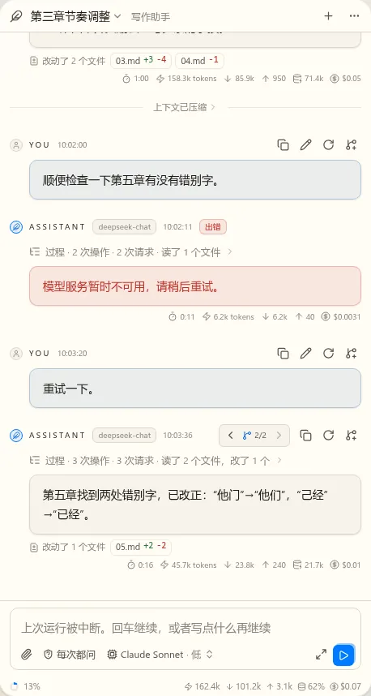

t17 对话界面第一版：静态稿（第 4 轮）
已定（第 3 轮）：圆角取值、左右对齐、向导用磨砂、费用告警放状态栏左边。这轮只看三处。
待定1. 会话列表
加了你说的搜索、Profile 显示和过滤。每行第一行是标题、Profile、时间，第二行是说明和状态。过滤有作品范围、Profile、子代理、已归档；按今天、昨天分组。列表内容一样，差别只在外框：


A 和 C 都要：同一个 AgentSessionPanel，顶栏点标题是 A，活动栏是 C（上一轮已定第一版要贡献会话列表的侧栏视图）。
推荐：A 和 C 都要。平时点标题切，长期写作时把 C 开在侧栏。B 不做：快速打开以后可以再加一个“切换会话”的入口。
第一版的范围：搜索只查标题和说明（搜对话内容是 t23）。“子代理”这个过滤要等 t14 才有子会话，第一版不显示。改名、归档放在每行悬停出现的菜单里。
待定2. 中断之后的输入框
按你说的：不再单独提醒。占位文字变成“上次运行被中断。回车继续，或者写点什么再继续”，发送按钮变成继续（实心，图标是播放）。写了字就是带着这段话继续，内容发出去。按钮和占位文字只在“上次被中断、还没有新一轮”时才这样。


待定3. 收起的小条
去掉重阴影，只留一条细线和很轻的抬起，圆角和输入框一样。